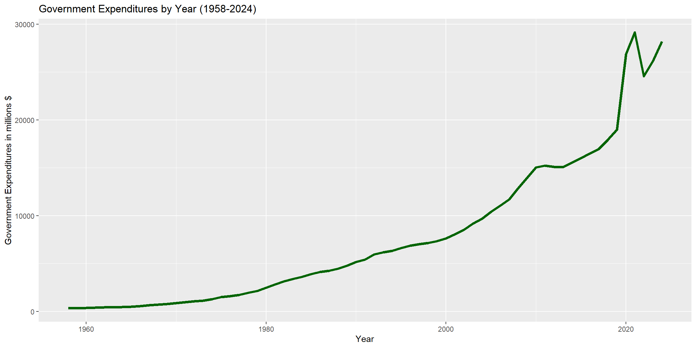
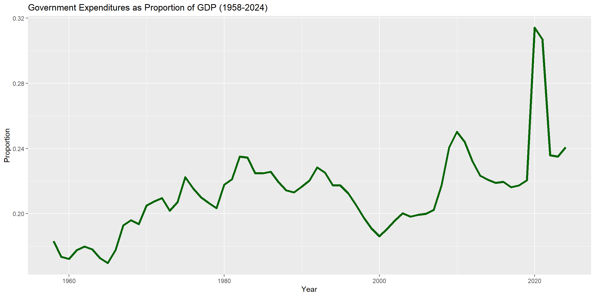
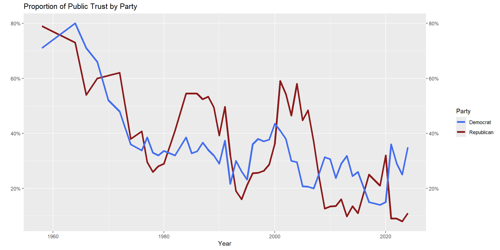
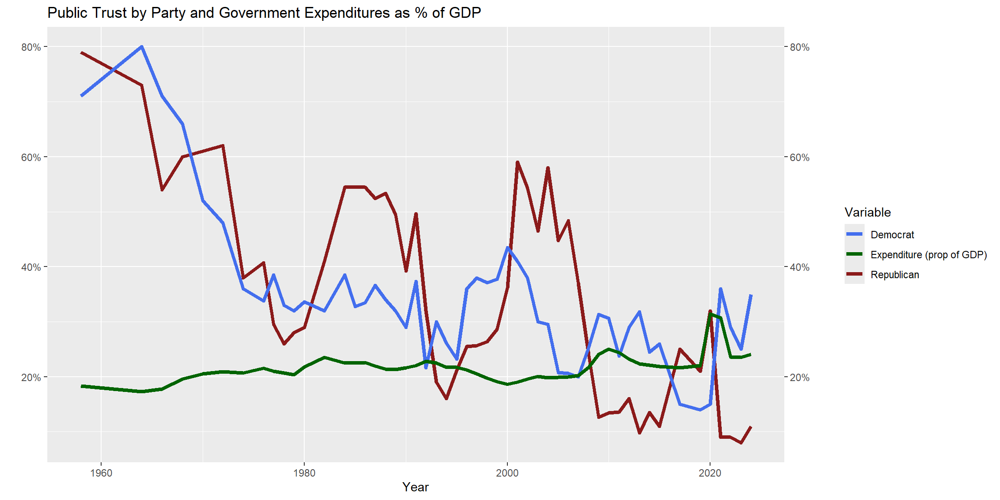
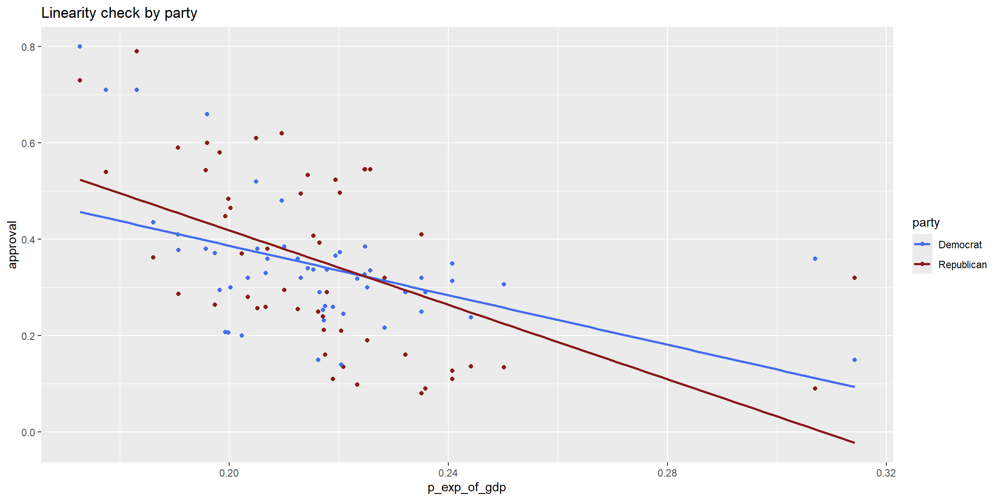
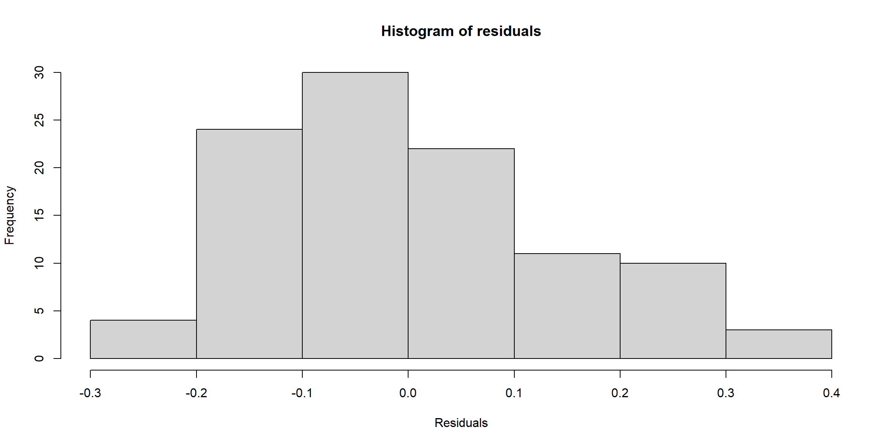
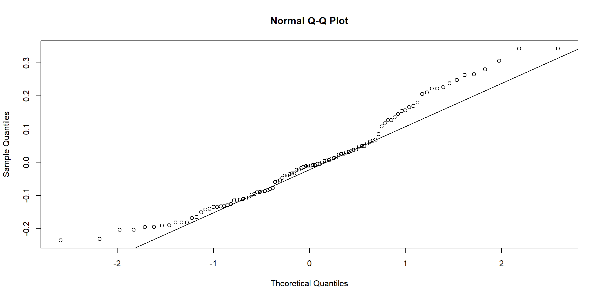

suppressPackageStartupMessages(library('tidyverse'))Subquestion 3: Government Expenditure
This document explores the relationship between the approval for yearly government spending and public trust in government by political party. Specifically, it aims to answer the following question.
Subquestion 3
Is the amount of public trust in the government correlated with the amount of government spending in a year, and is that correlation different between Democratic and Republican respondents?
Data Collection
In this section, we initialize R packages and pull data downloaded from the Federal Reserve Bank of St. Louis and Pew Research.
First I’ll load in the total expenditures data. This runs quarterly, but we are going to aggregate it into yearly so that we can directly compare it to the approval data
Expenditure data from https://fred.stlouisfed.org/series/FGEXPND. Data is stored in millions of USD (ie 4000 = $4 billion) The following data was collected from the Federal Reserve Bank of St. Louis. The first details total government expenditures by year, and each value is stored in millions of USD (ie 4000 = $4 billion).1 The second details total Gross Domestic Product (GDP) per year. 2
options(readr.show_col_types = FALSE)
#expenditures
expenditures<- read_csv('data/FGEXPND.csv')
head(expenditures)# A tibble: 6 × 2
observation_date FGEXPND
<date> <dbl>
1 1958-01-01 83.8
2 1958-04-01 88.5
3 1958-07-01 89.2
4 1958-10-01 91.0
5 1959-01-01 89.1
6 1959-04-01 90.1#gdpData Cleaning
In this section, we will clean the data that was pulled in the previous section, to prepare it for Exploratory Data Analysis (EDA) and hypothesis testing.
Expenditure Cleaning
To streamline this data, we will aggregate all the expenditures by year (as they are separated by category). Then, we will remove the data from Q1 and Q2 of 2025, as this would show a disproportionately low amount of government expenditure in 2025, only covering half the year.
#group by year
expenditures$year <- year(expenditures$observation_date)
yearly_expenditures <- expenditures |> group_by(year) |> summarise(year_sum_exp = sum(FGEXPND, na.rm = TRUE))
#removing the incomplete 2025 data
yearly_expenditures <- yearly_expenditures[-68, ]
head(yearly_expenditures)# A tibble: 6 × 2
year year_sum_exp
<dbl> <dbl>
1 1958 352.
2 1959 362.
3 1960 374.
4 1961 399.
5 1962 434.
6 1963 454.GDP Cleaning
Public Trust Cleaning
#loading in government expenditure data
expenditures<- read_csv('data/FGEXPND.csv')
head(expenditures)# A tibble: 6 × 2
observation_date FGEXPND
<date> <dbl>
1 1958-01-01 83.8
2 1958-04-01 88.5
3 1958-07-01 89.2
4 1958-10-01 91.0
5 1959-01-01 89.1
6 1959-04-01 90.1#clean data to show year
expenditures$year <- year(expenditures$observation_date)
#group by year
yearly_expenditures <- expenditures |> group_by(year) |> summarise(year_sum_exp = sum(FGEXPND, na.rm = TRUE))
#removing the incomplete 2025 data
yearly_expenditures <- yearly_expenditures[-68, ] For some basic eda, let’s see how this expenditures data looks
ggplot(yearly_expenditures, aes(x = year)) +
geom_line(aes(y = year_sum_exp), size = 1.5, color='darkgreen') +
labs(
x = "Year",
y = "Government Expenditures in millions $",
title = "Government Expenditures by Year (1958-2024)"
) Warning: Using `size` aesthetic for lines was deprecated in ggplot2 3.4.0.
ℹ Please use `linewidth` instead.
It appears that this data pretty much increases over time, so lets standardize it as a proportion of gdp https://fred.stlouisfed.org/series/GDP
#loading in gdp data
gdp<- read_csv('data/GDP.csv')
head(gdp)# A tibble: 6 × 2
observation_date GDP
<date> <dbl>
1 1958-01-01 468.
2 1958-04-01 472.
3 1958-07-01 486.
4 1958-10-01 500.
5 1959-01-01 510.
6 1959-04-01 523.#clean data to show year
gdp$year <- year(gdp$observation_date)
#group by year
yearly_gdp <- gdp |> group_by(year) |> summarise(year_sum_gdp = sum(GDP, na.rm = TRUE))
#now to combine our gdp and expenditures, and calculate the proportion of gdp the expenditures are
econ_combined <- yearly_gdp |> left_join(yearly_expenditures, by = "year")
econ_combined <- econ_combined |> mutate(p_exp_of_gdp = year_sum_exp/year_sum_gdp)
ggplot(econ_combined, aes(x = year)) +
geom_line(aes(y = p_exp_of_gdp), size = 1.5, color='darkgreen') +
labs(
x = "Year",
y = "Proportion",
title = "Government Expenditures as Proportion of GDP (1958-2024)"
) 
We still see the same increase over time, but maybe this will give us a little bit better comparison for the public trust. Lets bring that data in now, and see if there is any correlation between the proportion of government expenditures of GDP and the proportion of people who who say they trust the government to do what is right just about always/most of the time, according to a survey collection by Pew Research Center (https://www.pewresearch.org/politics/2024/06/24/public-trust-in-government-1958-2024/)
#reading in the public trust data
parties_public_trust <- read_csv('data/trust_in_government_parties.csv')
prop_parties_public_trust <- parties_public_trust |> mutate(Date = mdy(Date))
prop_parties_public_trust <- prop_parties_public_trust |> mutate(year = year(Date)) #selecting out the date
#aggregating by year to prevent double entries
prop_parties_public_trust <- prop_parties_public_trust |> group_by(year) |>
summarise(
rep_trust_prop = mean(`Republican/Lean Rep`, na.rm = TRUE) / 100,
dem_trust_prop = mean(`Democrat/Lean Dem`, na.rm = TRUE) / 100,
.groups = "drop")visualizing!
ggplot(prop_parties_public_trust, aes(x = year)) +
geom_line(aes(y = rep_trust_prop, color = "Republican"), size = 1.5) +
geom_line(aes(y = dem_trust_prop, color = "Democrat"), size = 1.5) +
scale_y_continuous(labels = scales::percent, sec.axis = dup_axis()) +
scale_color_manual(values = c("Republican" = "firebrick4", "Democrat" = "royalblue2")) +
labs(
x = "Year",
y = "",
color = "Party",
title = "Proportion of Public Trust by Party"
) 
Lets see where government expenditures as a proportion of GDP lines up
combine_exp_parties <- prop_parties_public_trust |> left_join(econ_combined, by = "year")
ggplot(combine_exp_parties, aes(x = year)) +
geom_line(aes(y = rep_trust_prop, color = "Republican"), size = 1.5) +
geom_line(aes(y = dem_trust_prop, color = "Democrat"), size = 1.5) +
geom_line(aes(y = p_exp_of_gdp, color = "Expenditure (prop of GDP)"), size = 1.5) +
scale_y_continuous(labels = scales::percent, sec.axis = dup_axis()) +
scale_color_manual(values = c("Republican" = "firebrick4", "Democrat" = "royalblue2", "Expenditure (prop of GDP)" = "darkgreen")) +
labs(
x = "Year",
y = "",
color = "Variable",
title = "Public Trust by Party and Government Expenditures as % of GDP"
) 
Hypothesis Testing
Now to run the statistical tests! I really doubt that we will find a correlation between spending and the approval of either party, which would still be an important finding!
I would like to do an ANOVA test, which will tell us whether the relationship between government expenditure and public approval differs by party leaning. We have to pivot the data frame slightly so that we have the distinct Republican and Democrat parties for the ANOVA test
pivoted_df <- combine_exp_parties |>
select(year, rep_trust_prop, dem_trust_prop, p_exp_of_gdp) |>
pivot_longer(
cols = c(rep_trust_prop, dem_trust_prop),
names_to = "party",
values_to = "approval"
) |>
mutate(party = ifelse(party == "rep_trust_prop", "Republican", "Democrat"))
print(pivoted_df)# A tibble: 104 × 4
year p_exp_of_gdp party approval
<dbl> <dbl> <chr> <dbl>
1 1958 0.183 Republican 0.79
2 1958 0.183 Democrat 0.71
3 1964 0.173 Republican 0.73
4 1964 0.173 Democrat 0.8
5 1966 0.177 Republican 0.54
6 1966 0.177 Democrat 0.71
7 1968 0.196 Republican 0.6
8 1968 0.196 Democrat 0.66
9 1970 0.205 Republican 0.61
10 1970 0.205 Democrat 0.52
# ℹ 94 more rowsNow I need to check my assumptions for the ANOVA test
library(car)Warning: package 'car' was built under R version 4.5.2Loading required package: carDataWarning: package 'carData' was built under R version 4.5.2
Attaching package: 'car'The following object is masked from 'package:dplyr':
recodeThe following object is masked from 'package:purrr':
some#fitting the model
model <- lm(approval ~ p_exp_of_gdp * party, data = pivoted_df)
#doing a linearity check
ggplot(pivoted_df, aes(x = p_exp_of_gdp, y = approval, color = party)) +
geom_point() +
geom_smooth(method = "lm", se = FALSE) +
labs(title = "Linearity check by party") +
scale_color_manual(values = c("royalblue2", "firebrick4"))`geom_smooth()` using formula = 'y ~ x'
#and checking the residuals for normality: These appear normally distributed!
res <- residuals(model)
hist(res, main = "Histogram of residuals", xlab = "Residuals")
qqnorm(res); qqline(res)
# that deviation on the far right makes it not normally distributed
shapiro.test(res)
Shapiro-Wilk normality test
data: res
W = 0.96095, p-value = 0.00373#checking for homogenity of variance: we fail to reject the null hypothesis, so the variences are homogenous across party groups
leveneTest(res ~ pivoted_df$party)Warning in leveneTest.default(y = y, group = group, ...): group coerced to
factor.Levene's Test for Homogeneity of Variance (center = median)
Df F value Pr(>F)
group 1 14.154 0.0002814 ***
102
---
Signif. codes: 0 '***' 0.001 '**' 0.01 '*' 0.05 '.' 0.1 ' ' 1Assumptions for the factorial ANOVA with a continuous covariate with interaction, aka ANCOVA (Analysis of Covariance)
- Independence: The public trust surveys would have random respondands, so we can assumpe independence, and the GDP and government expenditure of one year does not necessarily directly affect the expenditures the next year.
- Normality of Residuals: The Shapiro-Wilk test failed, so the data is not distributed normally
- Equality of Variances: The levene test failed, so there is no equality of variances
We fail two of the assumptions, so we cannot continue with the parametric ANOVA test. We are going to instead do a permutation ANCOVA model.
Hypotheses
There are three sets of hypotheses we can extract from the permutation ANCOVA model.
Interaction: The effect of government expenditure on approval by party
Null Hypothesis: The effect of government expenditure on approval is the same for Republicans and Democrats.
Alternative Hypothesis: The effect of government expenditure on approval differs between Republicans and Democrats.
Effect of Expenditure:
Null Hypothesis: Government expenditure has no effect on approval overall.
Alternative Hypothesis: Government expenditure does affect approval overall.
Effect of Party:
Null Hypothesis: Average approval is the same for Republicans and Democrats.
Alternative Hypothesis: Average approval differs between parties.
Alpha: 0.05
library(lmPerm)Warning: package 'lmPerm' was built under R version 4.5.2perm_model <- lmp(approval ~ p_exp_of_gdp * party, data = pivoted_df, perm="Prob")[1] "Settings: unique SS : numeric variables centered"summary(perm_model)
Call:
lmp(formula = approval ~ p_exp_of_gdp * party, data = pivoted_df,
perm = "Prob")
Residuals:
Min 1Q Median 3Q Max
-0.235388 -0.109903 -0.009929 0.065494 0.342998
Coefficients:
Estimate Iter Pr(Prob)
p_exp_of_gdp -3.216448 5000 <2e-16 ***
party1 -0.004925 51 0.686
p_exp_of_gdp:party1 0.646640 483 0.172
---
Signif. codes: 0 '***' 0.001 '**' 0.01 '*' 0.05 '.' 0.1 ' ' 1
Residual standard error: 0.1414 on 100 degrees of freedom
Multiple R-Squared: 0.2618, Adjusted R-squared: 0.2397
F-statistic: 11.82 on 3 and 100 DF, p-value: 1.081e-06 Interpretation
Residuals: These are relatively symmetrical and centered around 0, meaning we do not have any large outliers
Coefficients:
- There is a statistically significant negative effect of expenditure on overall approval. As expenditure increases, approval for both parties decreases
- There is no significant difference in average approval between parties.
- The interaction between expenditure and party approval is roughly the same for both parties.
Multiple R-Squared: 37.58% of variance in approval is explained by expenditure, party, and their interaction. F-statistic and small p-value: The model is significant
In context of the above hypotheses:
- Interaction: We fail to reject the null hypothesis that the effect of government expenditure on approval is the same for Republicans and Democrats
- Effect of Expenditure: We reject the null hypothesis that government expenditure has no effect on approval overall
- Effect of Party: We fail to reject the null hypothesis that average approval is the same for Republicans and Democrats
In the context of our original sub-question, “Is the amount of public trust in the government correlated with the amount of government spending in a year, and is that correlation different between Democratic and Republican respondents?”, we find that yes, the amount of public trust in the government has a negative correlation with the amount of government spending in a year (as a proportion of the total GDP), but that the correlation is not significantly different between Republican and Democratic-leaning respondants.